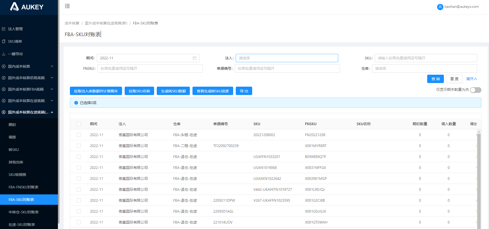

1.【生成转SKU数据】：数据同步至转SKU页面时，将类型1、类型2同样赋值至转SKU页面的【新类型1】【新类型2】中；（即程序生成的转SKU数据，转SKU表中【原类型1】=【新类型1】、【原类型2】=【新类型2】）
2.【拉取出入库数据并计算期末】：修改【转入数量】【转出数量】的计算逻辑，具体如下：
2.1【转入数量】：按照【当前期间+法人+新类型1+新类型2+新SKU单据编号+新SKU+新FNSKU】维度汇总拉取当【新类型2】=“FBA”时，【国外成本核算在途底稿/转SKU】列表中的【数量】字段；
2.2【转出数量】：按照【当前期间+法人+原类型1+原类型2+原SKU单据编号+原SKU+原FNSKU】维度汇总拉取当【原类型2】=“FBA”时，【国外成本核算在途底稿/转SKU】列表中的【数量】字段；